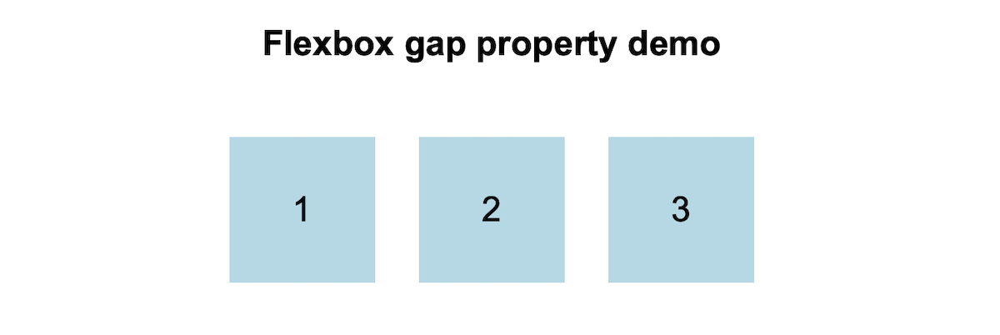

Post 4: Learning Web Design
This week I skimmed Chapters 14–17 of Learning Web Design. Even though I already knew some CSS basics, the book helped me understand layout as a system: boxes, flow, and flexible relationships between elements.
Chapter 14 (Thinking Inside the Box) reminded me that layout problems are often spacing problems. Every element is a box, and the final size is shaped by content, padding, border, and margin. Once I started checking margins and padding first, my debugging became much faster.
Chapter 15 (Floating and Positioning) was useful for understanding older layout habits and how positioning changes normal flow. Relative positioning felt “safe” for small nudges, but absolute/fixed positioning can easily break a layout if I rely on it too much.
The biggest takeaway came from Chapter 16: Flexbox and Grid. Flexbox changed how I think about alignment. Instead of manually spacing items with individual margins, I can let the container manage the layout using properties like “justify-content”, “align-items”, and especially gap. It feels cleaner and more predictable.
Chapter 17 (Responsive Web Design) connected everything: layouts need to adapt across screens. Responsive design is not just “making things smaller,” but choosing breakpoints intentionally and testing the design as it scales.

Overall, these chapters helped me see layout as a set of rules and relationships instead of a fixed composition. I’ll use Flexbox/Grid more intentionally in my blog layout and interactive narrative pages moving forward.